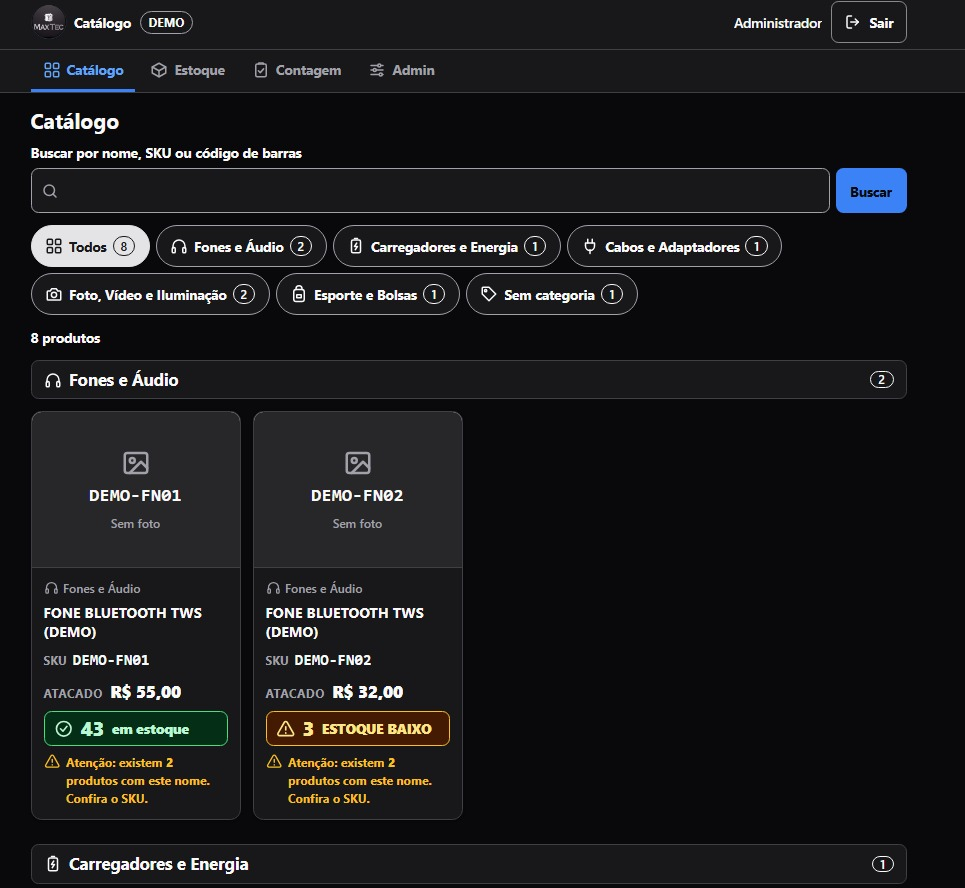
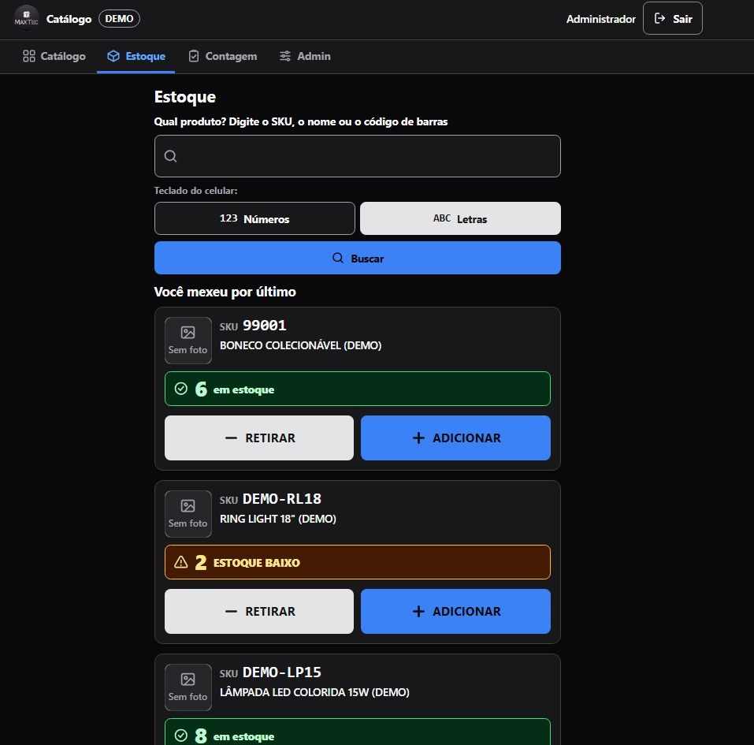
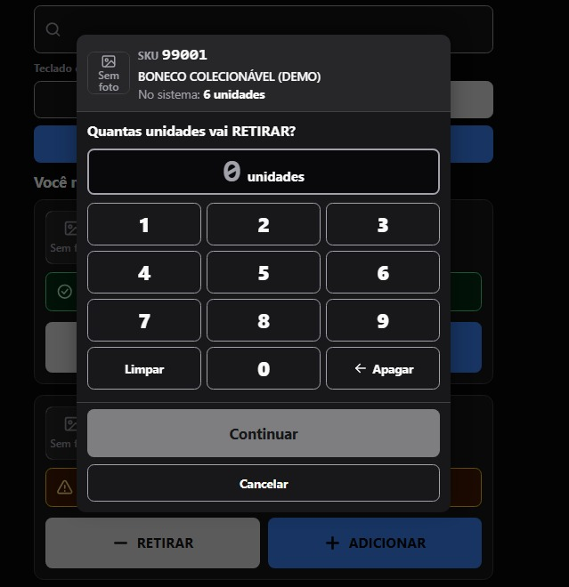
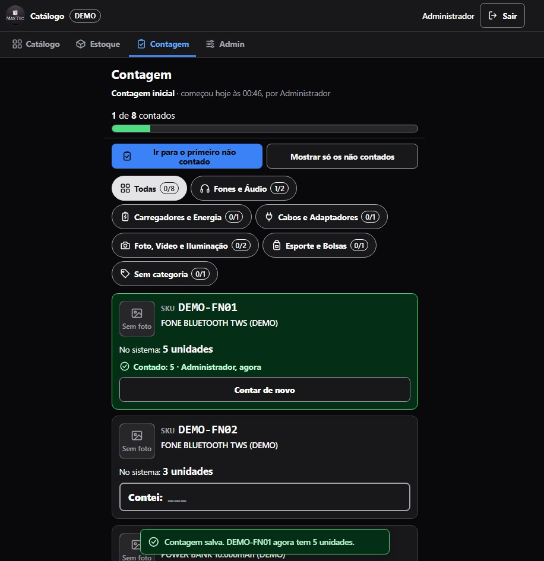
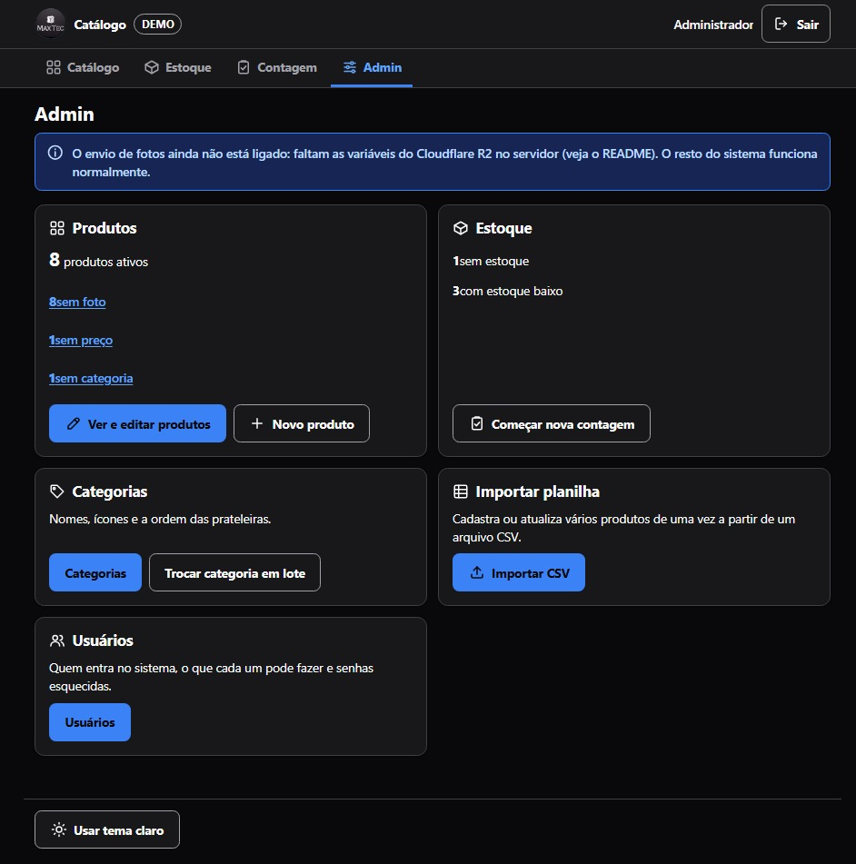

Em produção
Catálogo de produtos — MaxTec
Catálogo e controle de estoque da loja onde trabalho, usado para abastecer os anúncios do Mercado Livre e do TikTok Shop. Tem login e acesso por papéis: administrador, gerente de estoque e visualizador.
Entre como admin / demo2026 — ou como estoque ou visualizador, para ver as permissões mudando. Dados fictícios. O servidor hiberna: a primeira abertura leva até 1 minuto.
O que eu fiz
Especifiquei a arquitetura, o modelo de dados e os requisitos de usabilidade. O desenvolvimento foi assistido por IA a partir dessas especificações.
- O estoque sai do histórico de movimentações, não de um campo de quantidade. Cada entrada e saída vira um registro, e o saldo é a soma deles. Assim dá para responder quem mexeu, quando e quanto — e um erro se conserta corrigindo a movimentação, sem reescrever o saldo na mão.
- Uma interface separada para quem cuida do estoque físico. Quem conta produto está em pé, no depósito, com o celular na mão e pouca familiaridade com sistema. Essa tela tem busca por código de barras, botões grandes e um teclado numérico próprio.
- Contagem de inventário com progresso. Contar 200 produtos não acaba numa sentada, então a tela mostra quanto já foi contado e leva direto ao primeiro item que falta.
As telas





Tecnologias
Spring Boot 3 · Thymeleaf · PostgreSQL · Flyway · Spring Security · Docker